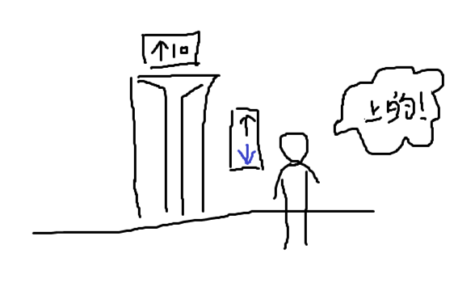

电梯楼层显示屏的设计失误
2019-03-27
每次上楼的时候都感到困惑，有一个问题我注意很久了。
电梯
其实没什么大不了的，目前某座楼里的电梯是这样的情况。电梯从楼上到1楼的过程中，楼层显示屏会显示向下的箭头↓，当电梯到达1楼，电梯门已经开了，箭头仍然向下。这时不少人会认为，电梯将要向下运行，到达地下室。

这种想法很正常，因为电梯存在另一个设计失误。当有人等待电梯想要从10楼到达1楼，同时正好有人乘坐电梯从1楼到达20楼，电梯会在10楼停下并开门。此时无论想到1楼的人是否上电梯，电梯都会继续向20楼行驶。在10楼会开门单纯是因为，在10楼想要到达1楼的人按下了电梯的按钮。
正因为电梯向上行驶的这种行为，很容易让人推测，电梯向下行驶也会存在这样的行为。在1楼看到箭头向下，以为电梯本是要到地下室，因为按了电梯的按钮，或正好有人在这一层出电梯，门就开了。然而事实是，箭头只是保留了之前电梯运行的状态（向下），至于接下来是向上还是向下，要看第一个进入电梯的人按了哪个楼层。
并非（绝不是）所有的电梯都这样。正确的做法应该是，当电梯没有运行任务时，显示屏不显示箭头，或者显示置空（–）之类的内容。
程序
当一个任务执行结束（电梯运行结束），应该把任务的标志位重置到初始状态（箭头置空）。这样的逻辑在程序里很常见，不管是UI还是内存，用户不可信，GC亦不可信，手动回收大法好。今天就踩了一个坑 :(
坑很简单，一句话就能表达：循环里执行SQL语句，Statement对象没关闭。
坑虽然简单，但在生产环境上影响了正常的业务操作。DB2的默认限制为1400-，之后就会报错。开发的时候要小心，自测的时候也应该注意大量数据的情况。此类错误，希望以后不要再犯！